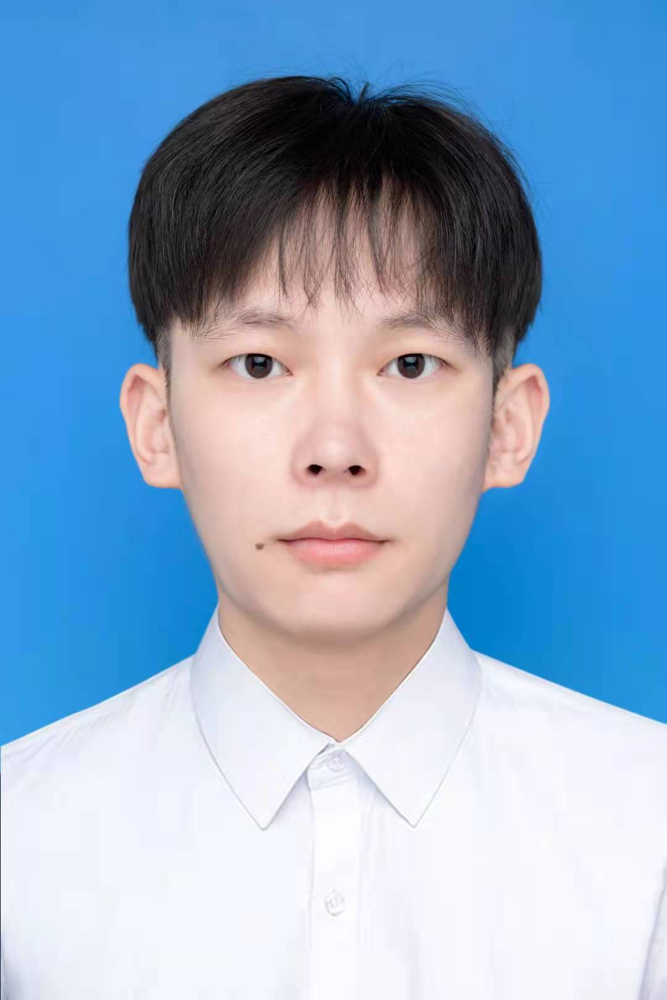
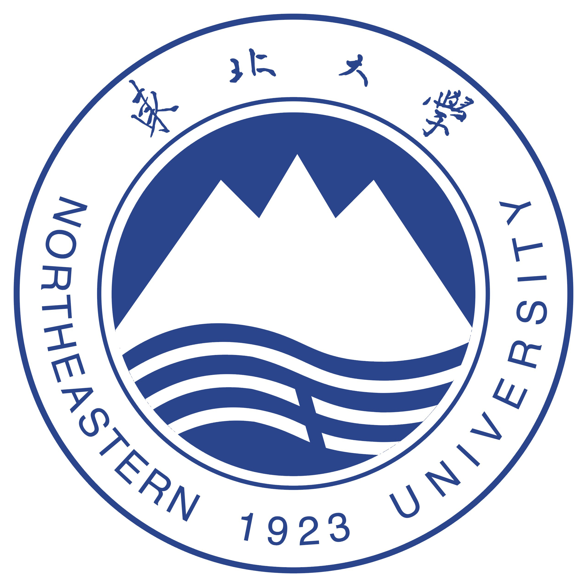

|
 |
导师: 曾荣飞 辽宁, 沈阳, 11000, 中国 邮箱: 2001248@stu.neu.edu.cn [中文简历] [ENG CV] [GitHub][English Page] |
我现在是一名硕士二年级的学生(2020年入学, 计划于2023年6月毕业), 就读于东北大学 软件学院。 我于2020年6月在 东北大学软件学院-信息安全专业获得了学士学位, 并推免至本校攻读研究生。 我希望在硕士毕业后继续攻读博士，并在将来成为大学老师继续科研事业。
主要研究领域: 基于机器学习的3D重构(图像 或者 点云 -> mesh或者 DIF)。
感兴趣的领域 还 包括: 生成对抗网络(GAN), 机器学习金融, 自然语言处理等
|
 |
硕士 东北大学 (2020.9 ~ now)
|
本科 东北大学 (2016.9 ~ 2020.7) |
Rongfei Zeng#, Mai Su#, Xingwei Wang. CD2: Fine-grained 3D Mesh Reconstruction with Twice Chamfer Distance. ACM Transactions on Multimedia Computing Communications and Applications(TOMM), under review. [PDF]
基于“端-云-边”的机器学习算法在工业故障预测中的应用研究
编号: 2020-KF-11-05
类型: 辽宁省自然科学基金
起止: 2020 年5 月- 2022 年4 月
承担工作：问题建模分析，系统结构设计
基于测量与协同调度的联邦学习网络传输优化研究
编号: 62172083
类型: 国家自然科学基金面上项目
起止: 2022 年1 月- 2025 年12 月
承担工作：协同调度机制的调查与研究
2017.04 2017年全国大学生英语竞赛-C 类三等奖，高等学校大学外语教学指导委员会和高等学校大学外语教学研究会
2017.09 二等学业奖学金，东北大学
2018.09 二等学业奖学金，东北大学）
2018.12 第十届全国大学生数学竞赛（非数学类）辽宁省三等奖，辽宁省数学会
2019.09 二等学业奖学金，东北大学
2020.05 二等学业奖学金，东北大学
2020.09 校长奖学金，东北大学
2020.10 一等学业奖学金，东北大学
2020.10 我为家乡代言视频大赛-二等奖，东北大学
2021.07 2021 宝马沈阳工厂“黑客松”大赛，优秀奖